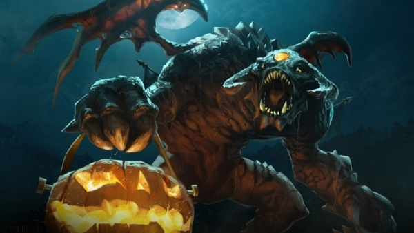
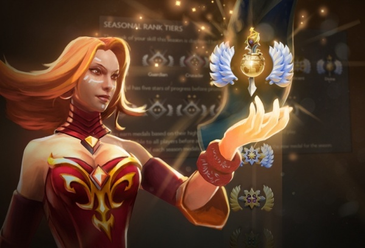
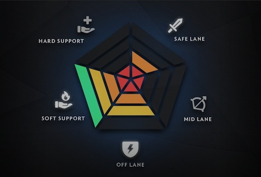
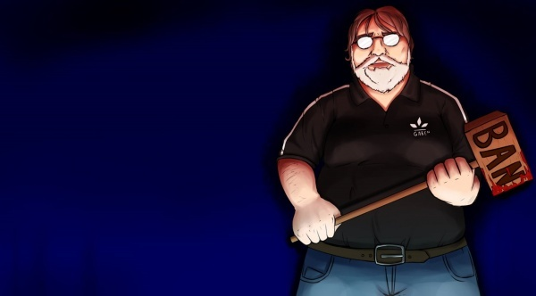
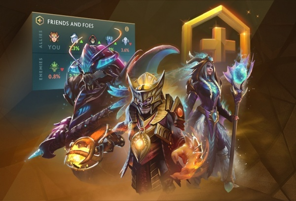

May 17, 2020 at 16:35
The Dota 2 community loves to criticize the game’s developers, Valve and its head Gabe Newell. Sometimes this criticism is well-deserved, sometimes not, but in any case, feedback from the players is taken into account. In this article, we recall the biggest steps towards the community when developers introduced or changed what some of the players actively demanded.

First of all, it is worth mentioning the moment when the community felt the power of their voice - the situation with Diretide in 2013. Then, under pressure, Valve restarted last year's event, although initially they were not going to do it. Another interesting point was the addition of Arcana for Io Io, which took second place in the vote for an item of this quality in the Battle Pass. Since then, it has become more difficult to achieve something from the company. Perhaps due to the fact that the community was not so united in other matters, but still there are some more important victories.
Seasonal Rating
It's no secret that most Dota 2 players have a low rating. Many believe that they have outgrown their MMR, but cannot raise it because of too weak allies. We will not talk about the objectivity of such an opinion, but dissatisfaction with the “endless season” increased among players with high ratings. The question of zeroing popped up on the forums more and more often.
The first experimental step was to add the opportunity to calibrate in The International Battle Pass 2016. Pass holders were invited to play 40 or more matches in a separate selection to get a seasonal rating, which after the main tournament of the year could replace their current MMR. In the same Battle Pass, another thing was added that the players asked for, though not so actively - the in-game tournaments of the Battle Cup series.
The innovation was accepted ambiguously: the community believed that all players should be able to get a new MMR. In November 2017, Valve introduced the same seasonal rating with medals. Now is the fourth season, and although developers are often late with a planned completion, they still try to listen to the ideas of the players.
The second factor destroying the atmosphere of Dota 2 was impunity. Because of it, toxic behavior and deliberate obstruction of the game has become common practice. The prospect of playing several low-priority matches in Single Draft did not stop the trespassers at all.
The fashion for aggressive behavior has successfully spread through streamers and even some pro-players. The community demanded tougher penalties, and in early February 2018, Valve released an update in which, among other things, a system was implemented that automatically issued a ban for 6 months for extremely negative behavior. The exact algorithm of the system was not disclosed, but now it is known that both player complaints and game actions tracked by the system are automatically taken into account.
This innovation made players for whom the main account is important to behave more restrained. Despite the fact that there was progress, many problems, including those not directly related to behavior, remained open.
In September 2019, developers took even more drastic measures and began to issue permanent blocking to users with an extremely low rating of behavior, as well as providing bans for purchased and “depleted” accounts, cheaters and other violators.
Valve received a portion of criticism both for the imperfection of the system and for its lateness: a wave of bans swept the players against the background of an already record low online. Blocking statistics are not published, but at least players can now believe in the significance of their complaints and hope that the most malicious pests will be adequately punished.
In September 2019, the Blacklist was added to the Dota Plus functionality, previously the owners of The International 2019 Battle Pass had this opportunity. The operation of the system raises questions. Players complain that the capacity of the list is too low, and that it does not always fulfill its direct and sole purpose - to avoid a specific player. But you must admit, when available complaints end, this button is an effective way to let off steam and bring justice to players who ruined their mood.
The first experimental step was to add the opportunity to calibrate in The International Battle Pass 2016. Pass holders were invited to play 40 or more matches in a separate selection to get a seasonal rating, which after the main tournament of the year could replace their current MMR. In the same Battle Pass, another thing was added that the players asked for, though not so actively - the in-game tournaments of the Battle Cup series.

The innovation was accepted ambiguously: the community believed that all players should be able to get a new MMR. In November 2017, Valve introduced the same seasonal rating with medals. Now is the fourth season, and although developers are often late with a planned completion, they still try to listen to the ideas of the players.
Search by Roles
Perhaps the most resonant discussion was about the need to play strictly defined roles. Matchmaking implied that the players themselves would distribute responsibilities and lines in the game, which increasingly led to quarrels and low-quality games, where there were several foresters, many base characters and not a single support. Even on the center line several players could start the match at once. All this contributed to an increase in toxicity and an outflow of the audience. It is not surprising that the forums were full of demands to solve something with this situation, and the main way out was to introduce a tight binding of each player to a certain role.
But not everyone was of the same opinion. There were many supporters in the position that Dota 2 was too variable, and it is not possible to adequately implement role-based search without compromising the gameplay. In September 2018, as in the case with the previous paragraph, Valve decided to carefully test the system on the part of the most loyal players - this time on Dota Plus subscribers. Despite skepticism, there were so few violators who sabotaged the game on the chosen role that they could be neglected. But another problem surfaced - the search for the most popular positions took too much time.
In August 2019, role search became available to everyone. Other points were also added, which have been discussed for a long time (combining single and group ratings and dividing it into support and basis). This did not solve all the problems, including those with a long search, and over time there were updates aimed at eliminating them. This is how the “quick search” system and the tokens currently in use appeared. Also returned to normal mode without reference to the roles. You can have a different attitude to the quality of work done in this direction, but even the most ardent skeptics will agree that the situation in matchmaking is now much better than before the introduction of search by roles.
But not everyone was of the same opinion. There were many supporters in the position that Dota 2 was too variable, and it is not possible to adequately implement role-based search without compromising the gameplay. In September 2018, as in the case with the previous paragraph, Valve decided to carefully test the system on the part of the most loyal players - this time on Dota Plus subscribers. Despite skepticism, there were so few violators who sabotaged the game on the chosen role that they could be neglected. But another problem surfaced - the search for the most popular positions took too much time.

In August 2019, role search became available to everyone. Other points were also added, which have been discussed for a long time (combining single and group ratings and dividing it into support and basis). This did not solve all the problems, including those with a long search, and over time there were updates aimed at eliminating them. This is how the “quick search” system and the tokens currently in use appeared. Also returned to normal mode without reference to the roles. You can have a different attitude to the quality of work done in this direction, but even the most ardent skeptics will agree that the situation in matchmaking is now much better than before the introduction of search by roles.
Ban
The second factor destroying the atmosphere of Dota 2 was impunity. Because of it, toxic behavior and deliberate obstruction of the game has become common practice. The prospect of playing several low-priority matches in Single Draft did not stop the trespassers at all.
The fashion for aggressive behavior has successfully spread through streamers and even some pro-players. The community demanded tougher penalties, and in early February 2018, Valve released an update in which, among other things, a system was implemented that automatically issued a ban for 6 months for extremely negative behavior. The exact algorithm of the system was not disclosed, but now it is known that both player complaints and game actions tracked by the system are automatically taken into account.
This innovation made players for whom the main account is important to behave more restrained. Despite the fact that there was progress, many problems, including those not directly related to behavior, remained open.

In September 2019, developers took even more drastic measures and began to issue permanent blocking to users with an extremely low rating of behavior, as well as providing bans for purchased and “depleted” accounts, cheaters and other violators.
Valve received a portion of criticism both for the imperfection of the system and for its lateness: a wave of bans swept the players against the background of an already record low online. Blocking statistics are not published, but at least players can now believe in the significance of their complaints and hope that the most malicious pests will be adequately punished.
Ability to avoid the player
In September 2019, the Blacklist was added to the Dota Plus functionality, previously the owners of The International 2019 Battle Pass had this opportunity. The operation of the system raises questions. Players complain that the capacity of the list is too low, and that it does not always fulfill its direct and sole purpose - to avoid a specific player. But you must admit, when available complaints end, this button is an effective way to let off steam and bring justice to players who ruined their mood.
